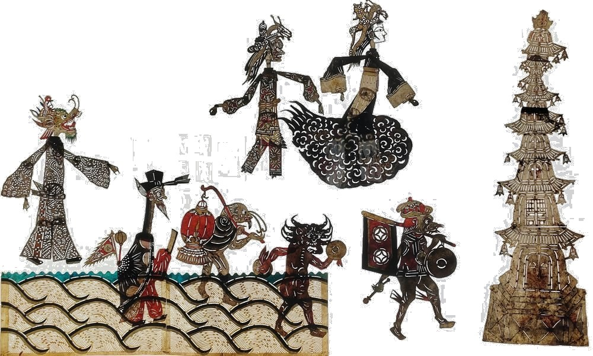
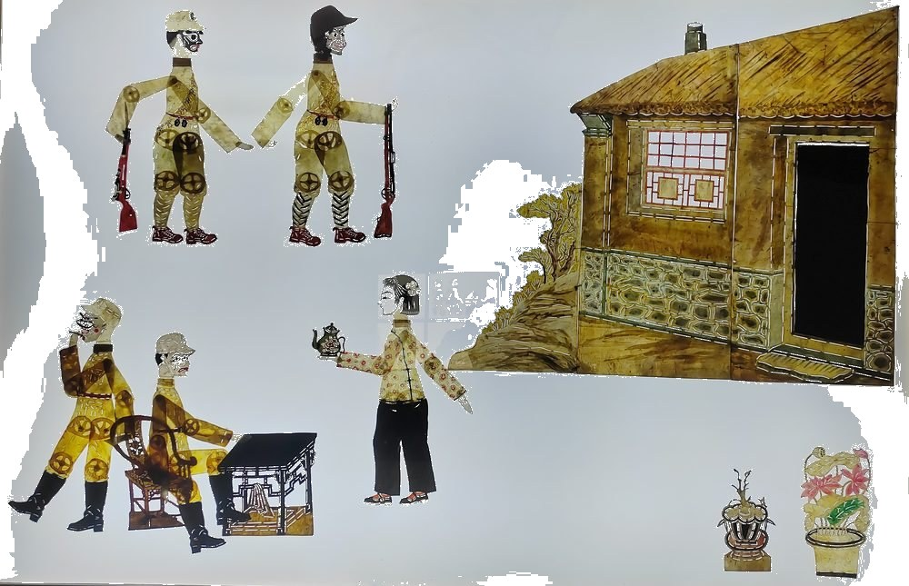
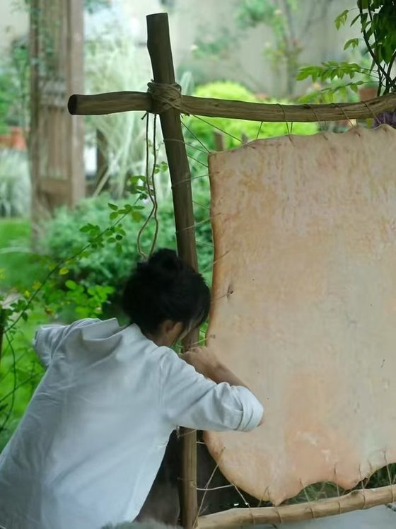
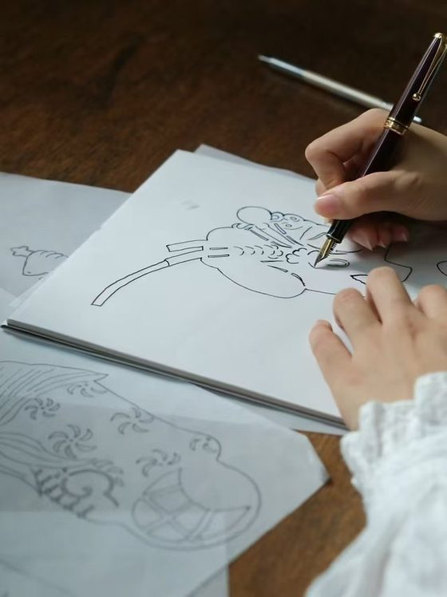
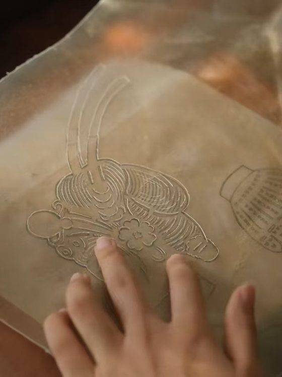
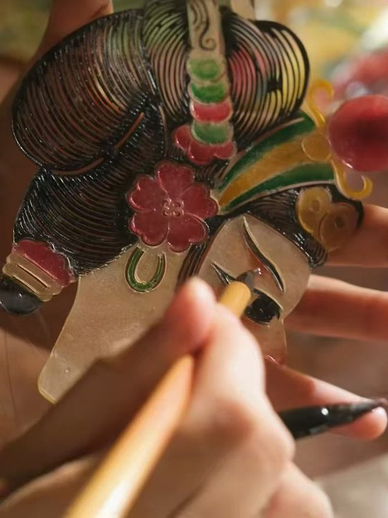
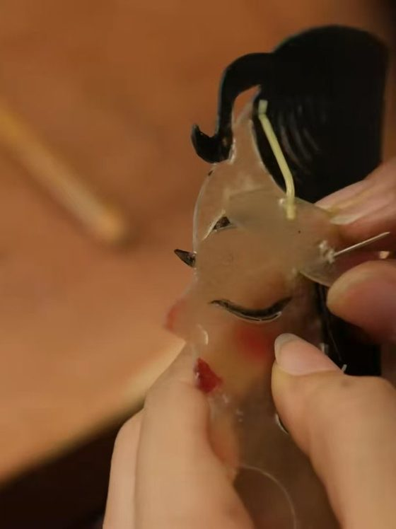
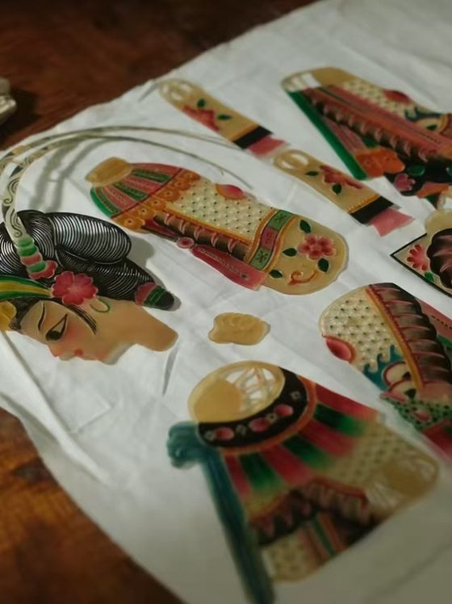
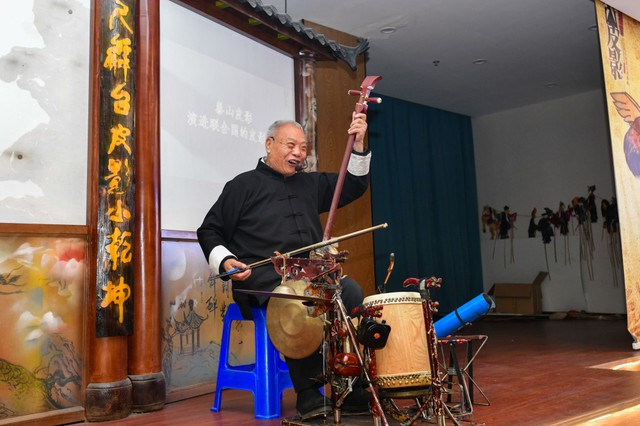

头条

数字化光明网2025-10-20
AI 皮影资料库开放：输入草图，十秒生成一件数字皮影
在北京汪氏皮影艺术馆，清华美院姚智皓演示了与汪氏皮影共同研发的 AI 皮影资料库：高清拍摄、逐件标注建成数据集，输入草图和关键词，十秒就能生成数字皮影。
第五代传承人党飞华说，过去学艺要拜师多年，如今门槛降到会画草图。他给自己定了三年目标——让全球一百万人成为皮影创作者。
影窗里的说戏人 · 大模型驱动

一颗头定行当。这具韦陀专用头茬，刻纹盘绕、眉眼压得极低，眼与口都刻空——隔着亮子看，只剩一道黑影。头饰分冠、帽、盔、巾四类，看帽上的名色，就知这是将、是官，还是神。

桌椅、案几、山石，一场戏的场面靠这几件拼。这把带扶手的椅子椅腿已残，关节上的绑绳还在。砌末全靠简约的符号点题——富贵人家添几笔雕刻，穷人家连裙围也不加。

摆上莲花台，就知道这场戏在仙界。台上四个力士撑着莲座，一层花瓣一层云气，边角再挂两朵未开的莲。衬景只管交代「这是什么地方」，整幅铺满亮子，一米多高、两米多宽。

只在武戏和神怪戏里出场。龙首、马身，通体鳞甲，鬃毛一根根刻出，鞍鞯压在背上。件数最少，雕工反而最放得开——怎么密怎么刻。马腿的关节也留出皮线，跑起来才不僵。

不拆的一整件，头与身连在同一块皮上。这具悟空执棒而立，红裤、虎皮裙，脚下接一根签子直通上身。多数影人头身分开：身段叫「桩子」，胸臀四肢连手共十件，以皮线连缀。

一件团花衫上要刻满团花，刀口留筋，透光才不糊。戏班看手艺，先看戳子的线密不密、留筋匀不匀。一套影箱头茬能有几百上千件，戳子只备几十件——换戏换的是头，身子还是那一件。
影戏两千年
点朝代，看这一朝的来路
十四个地区 · 七大影系 — 点红点或省份，地图推近到那一处，右栏一并换掉
底图为流派分布示意图，不作行政区划依据；流派文字取自中国美术学院「皮影数字博物馆」
07 · 经典剧目
戏单上盖着「全本」的印 — 点一出，右栏换它的折子与唱词
戏目、折子与唱词取自「千年影戏」角色剧目页，唱词为演出本片段

数字化光明网2025-10-20
在北京汪氏皮影艺术馆，清华美院姚智皓演示了与汪氏皮影共同研发的 AI 皮影资料库：高清拍摄、逐件标注建成数据集，输入草图和关键词，十秒就能生成数字皮影。
第五代传承人党飞华说，过去学艺要拜师多年，如今门槛降到会画草图。他给自己定了三年目标——让全球一百万人成为皮影创作者。
演出央视网2025-02-12
运动员村一楼展厅，舞台以冰雪大世界为背景，影人在幕后演绎冬季花样冰舞，向亚洲 34 个国家和地区的健儿道一声欢迎。
抢救记录新华社2023-06-11
甘肃环县陈旗塬村的一孔窑洞，83 岁的敬廷佑端坐幕布中央，《竹林会》开戏。敬家班 1903 年成班，如今撑幕布的，还是那对八十多岁的兄弟。
名录新华社2011-11-27
巴黎，保护非物质文化遗产政府间委员会第 6 届会议决定，把中国皮影戏列入名录。一人操数偶、即兴演唱、兼奏数器的本事，由此进入世界级保护视野。
演出新华网甘肃频道2025-11-26
国庆黄金周，庆阳一中的学生一早就坐上高铁，从西峰直奔环县，只为在环州故城看一场道情皮影、上手刻一刀。
皮影馆里，传承人张志文俯身雕的是一件高铁造型的影偶，流线车身刻得一丝不苟。他说，高铁给了环县机遇，他要拿这门老手艺把它记下来。


一张驴皮万刻刀。薄皮留头胸腹，厚皮留腿脚，影偶才上轻下重。

皮要推平再下针。侧影起稿，关节先留余地。

顺丝走刀，阳刻为主。关节留筋，一断整件废。

矿物色趁热敷，先浅后深，双面罩两三遍。

三根签子定乾坤：胸一、手二，武场挪后肩。

发汗压平，低温多次；高温起泡，前功尽弃。

山东泰安 · 泰山皮影戏 摄影 朱峥 / 新华社